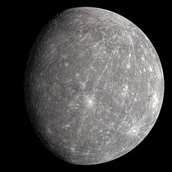
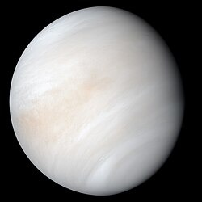
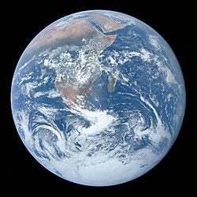
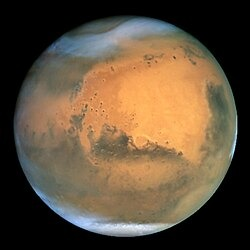
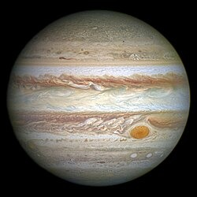
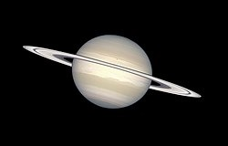
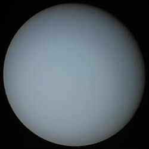
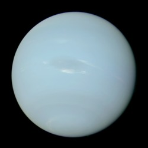
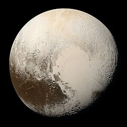
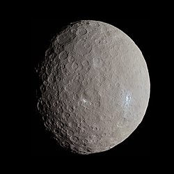

| Планета | Зображення | Діаметр (км) | Кількість супутників | Цікавий факт |
|---|---|---|---|---|
| Меркурій |  | 4,879 | 0 | Найменша планета в Сонячній системі. |
| Венера |  | 12,104 | 0 | Атмосфера настільки щільна, що там немає вітру. |
| Земля |  | 12,742 | 1 | Єдина відома планета з життям. |
| Марс |  | 6,779 | 2 | Називають "Червоною планетою" через колір ґрунту. |
| Юпітер |  | 139,820 | 95 | Найбільша планета Сонячної системи. |
| Сатурн |  | 116,460 | 83 | Відомий своїми яскравими кільцями. |
| Уран |  | 50,724 | 27 | Обертання відбувається "лежачи на боці". |
| Нептун |  | 49,244 | 14 | Має найсильніші вітри у Сонячній системі. |
| Плутон |  | 2,377 | 5 | Карликова планета з орбітою, що перетинає орбіту Нептуна. |
| Церера |  | 940 | 0 | Найбільший об’єкт у поясі астероїдів. |